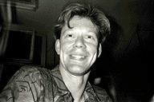

http://www.midi2cs.de
rubo@midi2cs.de
Current Positions
Siemens ÖN/TI Berlin
Intelligent Networks
Software Developer
Songlab Executive
Producer, Programmer
Composer, Musician
Education
1989 Diplom-Ingenieur Elektrotechnik
Technical University of Berlin, Germany
Personal Information
Date of Birth : February 16th, 1961
Place of Birth : Gettorf, W-Germany
Nationality : D (German)
Marital Status : Married, One child
Languages : Fluent in German and English
Character : Engineer, addicted to cutting edge technologies
Hobbies
I enjoy my family, singing, playing a myriad of musical instruments, sampling,
programming, producing music, biking, canoeing, Greenpeace, dreaming of Rome &
NYC, drinking white wine in the summer and red wine in the winter while eating
Marina's pizza. Unfortunately, there is never enough time to do all these nice
things.
Rüdiger Borrmann
Bonhoefferufer 13
D-10589 Berlin
Tel: +49-30-34901104
Fax: +49-30-34901106